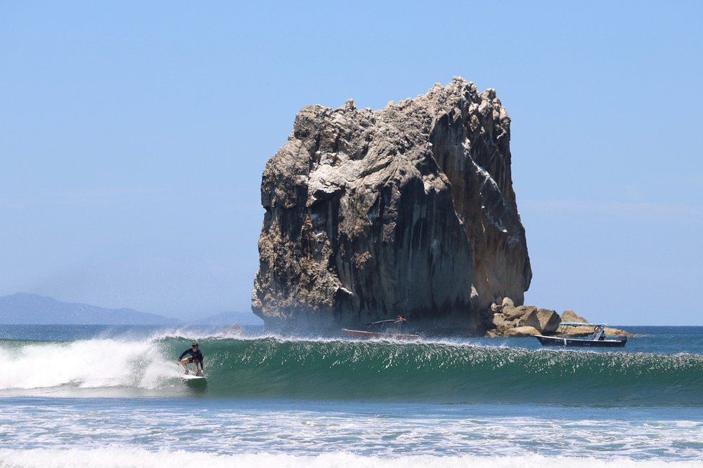

A primeira vez na Costa Rica foi para acompanhar cinco meninas
surfistas com um fotógrafo profissional. Eu não sabia surfar —
mas comprei uma prancha e fui me aventurar assim mesmo.
Essa é a essência de quem viaja de verdade.
Foram 14 dias incríveis. Alugamos um carro e fomos percorrer
a costa inteira. Sem Waze — era época de mapas, GPS e perguntar
na rua. Os moradores não acreditavam quando perguntávamos como
chegar em algum lugar. A orientação era sempre vaga:
"muito longe". E a gente ia assim mesmo.
Os lugares que nos roubaram o coração
Playa Hermosa, Arenal, Tamarindo, Roca Bruca
Percorremos a costa de ponta a ponta — Playa Hermosa com suas
ondas poderosas, o Vulcão Arenal imponente entre a neblina,
Tamarindo com sua energia de surf e vida noturna, e Roca Bruca,
selvagem e linda.
Cada parada era uma descoberta nova. A Costa Rica tem esse dom
de te surpreender a cada curva da estrada.

Roca Bruca — selvagem e inesquecível
Surfando com crocodilos
A aventura que ninguém esquece
Tive a oportunidade — ou seria loucura? — de surfar com crocodilos
nas proximidades e fundo de coral sob os pés. A Costa Rica não
é para os fracos de coração.
Em um dos dias, tomei uma onda na cabeça. Foi assustador —
por um momento achei que não ia sair. Saí. E voltei para a água.
Porque é assim que funciona: você cai, você levanta, você volta.
A vida costarriquenha
Pura Vida não é só um ditado
A comida me surpreendeu — diferente e gostosa. Comer feijão no
café da manhã virou rotina e eu amei. O povo é amoroso de um
jeito genuíno, e o espanhol costarriquenho tem uma musicalidade
que encanta.
Pura Vida — dizem para tudo. É cumprimento, é resposta,
é filosofia de vida. E depois de 14 dias lá, você começa a entender
o que significa de verdade.
Entre mulheres, desbravando
O que essa viagem me ensinou
Tinha algo de especial em ser um grupo só de mulheres — cada uma
com sua coragem, seu ritmo, sua forma de encarar o desconhecido.
Sem Waze, sem certezas, com muita vontade de descobrir.
Voltei à Costa Rica mais três vezes depois dessa. Isso diz tudo. 🌊